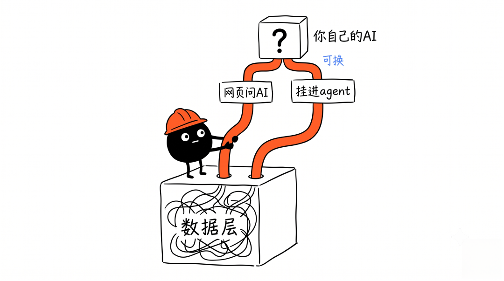
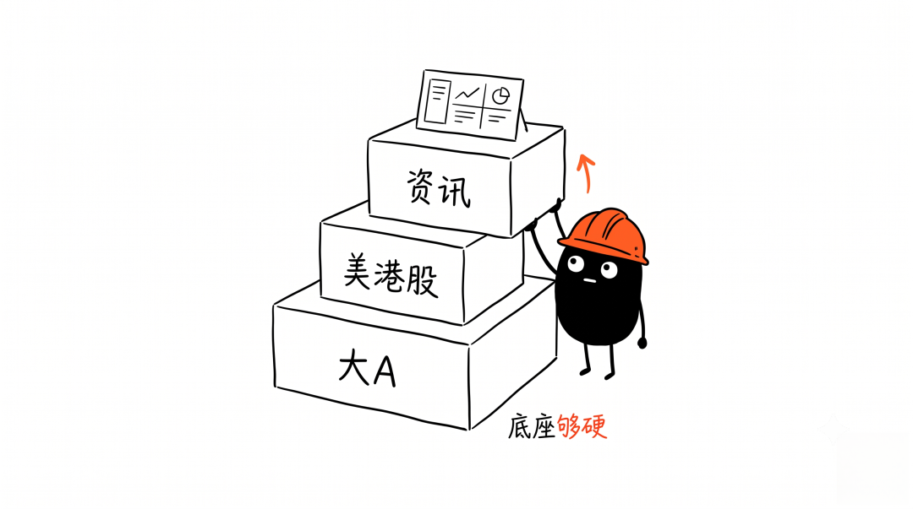
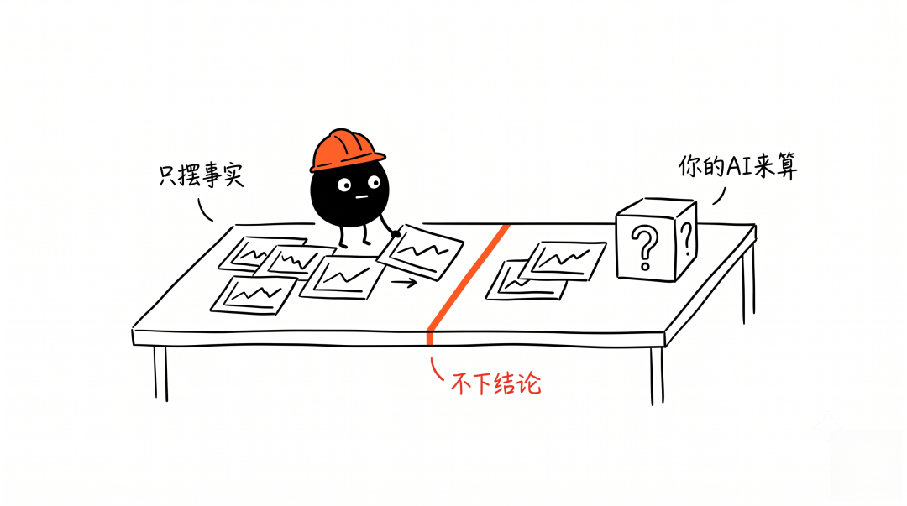

欢迎加入我的知识星球「Simon林的星球」，获取详细代码、配置文件和 Skill
大家好，我是 Simon。
先甩结论：我把自己天天在用的个人投研系统 Vibe-Research 开源了，大A、美股、港股都能看，代码全公开。
但这篇不教你怎么用，讲一件更值钱的事——它的架构，为什么这么搭。
一句话架构：一套数据层，两条 AI 出口
市面上大部分「AI 荐股」产品都在干同一件事：替你下结论。给你一个方向，对错没人负责，跟着走还提心吊胆。
Vibe-Research 反着来：数据我配齐，结论交给你自己接入的 AI。
拆开就两层：
底下一套数据层：行情、研报、估值、财务、公告、资金面、资讯，全打通。 上面两条 AI 出口：网页里直接问 AI，或者挂进你自己的 agent。
数据和 AI 彻底解耦，是整个框架最关键的一步。数据是死的、客观的；AI 是你自己挑的、随时能换的。谁也不绑谁。

数据源：三个开源引擎，star 是最直接的背书
一个投研系统值不值，先看底料硬不硬。
Vibe-Research 的数据层，是三个我自己开源的数据引擎，随仓库开箱即用，clone 下来就能跑：
| 数据引擎 | 覆盖 | 体量 | 星标 |
|---|---|---|---|
| a-stock-data | 大A 全栈 | 10 层架构 · 40 端点 · 13 源 | ★ 6.4k |
| global-stock-data | 美股 / 港股 | 7 层架构 · 17 端点 · 零鉴权 | ★ 1.1k |
| investment-news | 全球产业链资讯 | 12 赛道对应大A板块 · 100+ 源 | 刚上线 |
行情、研报、资金面、筹码、公告、打板情绪……全覆盖。star 数摆在这，够不够硬自己判断。

踩过的坑也说两句：有的数据源高频调用会封 IP；有的库财务数值直接放大三四倍，对不上就得换源。这些我都趟过了，怎么绕过——完整方案在星球。
七大功能：配齐一个完整的投研看板
数据配齐了，上层做了七个模块，从盘面到个体、从资讯到沉淀，一站到位：
| 模块 | 干什么 |
|---|---|
| 每日复盘 | 大盘 · 全球市场 · 市场情绪 · 板块资金一屏，一键交给 AI 复盘 |
| 资讯雷达 | 12 赛道 100+ 公开源，AI 一键提炼当天「今日要点」 |
| 板块中心 | 按产业环节拆解板块骨架，挂上自己关注的方向 |
| 标的数据 | 估值 · 分位 · 财务 · 研报 · 公告 · 资金面一屏聚合，大A + 美港股通用 |
| 我的持仓 | 本地记盈亏，数据只存本地、不上传 |
| 研究记录 | 复盘 / 要点 / 问答沉淀在本地，随时回看 |
| 接入 AI | 订阅或 API 接入任意大模型 |
框架的优越性，藏在三个细节里
一、两条 AI 出口，工具中立。
系统 AI 给小白：网页里填个 key，直接问。MCP 通道给高手：挂进自己的 agent，免 key。豆包、DeepSeek、Claude、Codex……任意 AI 都能跑，提示词是通用资产，不绑死任何一家。
二、全链路流式 + 工具溯源。
问 AI、复盘、提要点，全是逐字流式输出。AI 调了哪个数据工具、拿了什么，实时溯源看得见——不是黑箱丢你一段话完事。
三、中立，是最难被复制的护城河。
Vibe-Research 只呈现客观事实：榜单、数据、公开信息。不荐股、不预测涨跌、不给买卖时机、不做主观评分。方向和结论，全由你自己的 AI 给。
在一个被割怕了的市场里，「我不替你做决定」反而是最强的信任状。

为什么开源
说白了：框架公开，能力沉淀。
数据怎么接、AI 怎么挂、七个模块怎么搭——全开源，谁都能看。但真正把它用出花、接自己的策略、往框架里填内容，是另一回事。
完整代码、每个模块的配置、怎么两步接入你自己的 AI，我都整理在星球了。
⚠️ 本内容仅为技术分享，不构成任何投资建议。
Simon · Claude Code 深度玩家 知识星球「Simon林的星球」— 配置文件、完整代码、Skill 全部在星球